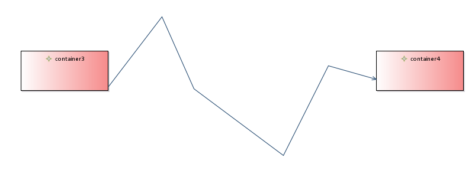
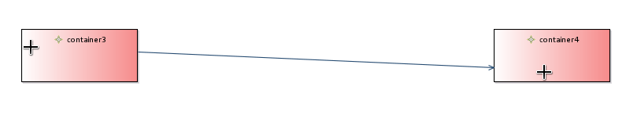
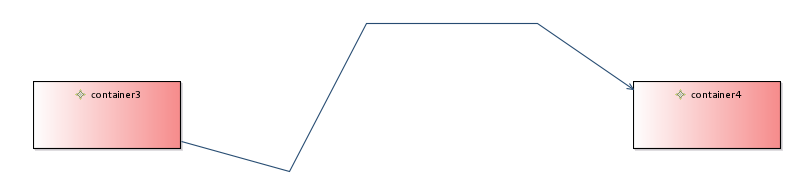
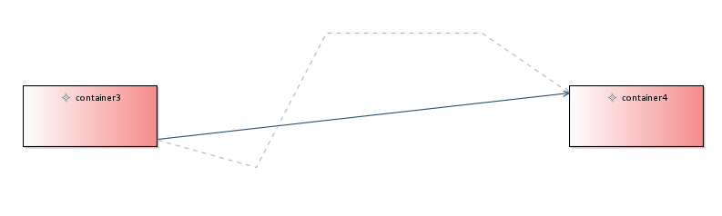

Summary: Add an action that allows the end user to remove all bend points between the two edge ends.
| Version | Status | Date | Authors | Changes |
|---|---|---|---|---|
| v0.1 | DRAFT | 2014-09-02 | fbarbin | Initial version. |
| v0.2 | PROPOSAL | 2014-09-11 | fbarbin | Update after team review. |
Relevant tickets:
The end user may have created different “bend points” (or inflection points) on an edge and may want to return this edge to “straight” again. This enhancement aims to add an action that will remove all bend points (of a specific edge) between the source and the target connection points.
There are two strategies when deleting bend points:
The result between these two strategies can be different in the case where the end user has moved an edge anchor after it has been created.
First example where there is no differences between these two cases:
The user has drawn this edge:
He next creates several bend points:

(Remark that edge connection points did not move during the bend points creation. Indeed, at the edge creation time, the source and target anchors are located at the same position than the connection points)
Having executed the action, the result for both solutions will be the following one:
Second example with modified edge anchors (the cross cursors materialized where the user moved the edge anchors):

The user creates three bend-points:

Note that the edge source and target connection points have moved: the last edge segment follows the edge anchor.
By applying the first solution, the edge retrieves it’s original location between the two anchors. The result is this one:
With the second solution, the result will be as following:

This evolution does not change any API.
No user interface change.
This new feature should be added in the New and Noteworthy documentation.
A note should also be added in the user doc to explain this new feature.
Add SWTBot tests that check that:
This action will be available for multiple selections since it can be applied on edges separately.